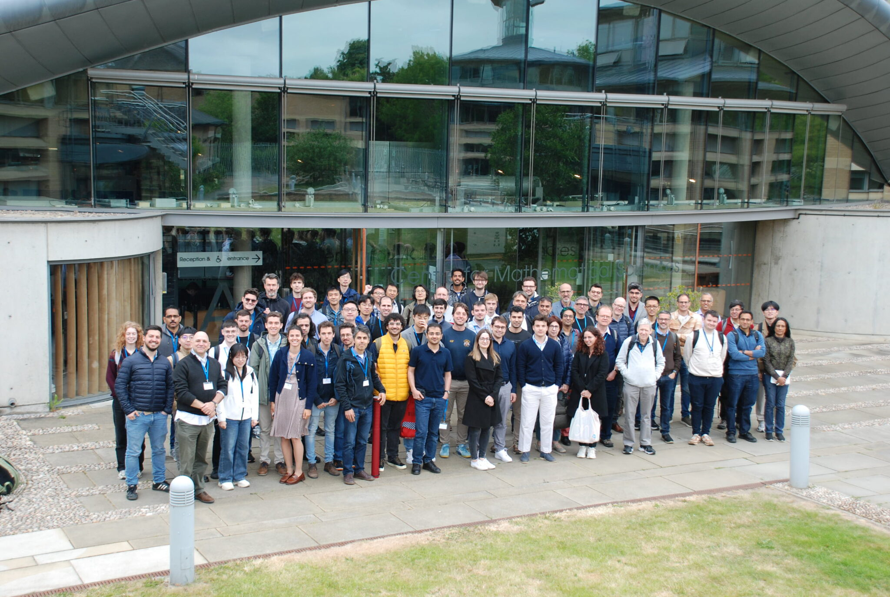

The 3rd Cambridge Information Theory Colloquium was held as a special session on Thursday 15 May 2025, as part of the 8th London Symposium on Information Theory (LSIT 2025), held at St. John's College, University of Cambridge, from 14 to 16 May 2025.
Centre for Mathematical Sciences (CMS), MR2, University of Cambridge.
| Event | Time |
|---|---|
| Michael Gastpar | 9:00 – 9:50 |
| Emina Soljanin | 9:50 – 10:40 |
| Coffee Break | 10:40 – 11:10 |
| Anelia Somekh-Baruch | 11:10 – 12:00 |
| Mark Wilde | 12:00 – 12:50 |
Information Measures, Universal Prediction, and Large Language Models
Michael Gastpar, EPFL
Abstract: Information measures offer a principled framework for analyzing problems in statistical learning. In this talk, our focus will be on a class of information measures that follow in a natural fashion from Hölder's Inequality and are known in the literature as Sibson's mutual information of different orders. We investigate their fundamental properties, including variational representations that shed light on their structure and utility. We then demonstrate how these measures can be applied to a range of learning problems, with a particular focus on prediction tasks. This perspective not only offers novel analytical tools but may also provide insight into the behavior of large language models.
On Non-Local Coset-Guessing Quantum Games
Emina Soljanin, Rutgers University
Abstract: A non-local quantum game usually involves a referee (Alice) playing against two or more players (Bob and Charlie) who aim to meet a joint condition to win the game. The players can devise a joint strategy in preparation for the game but not communicate once the game starts, which makes the game non-local. Communication during the game is only between the referee and the players. This talk focuses on hidden coset guessing, a recently proposed game concerning unclonable cryptography. We know that the probability of Bob and Charlie winning decreases as the number of game rounds increases. This talk derives the winning probability and optimal strategy for some game variants. The optimal strategy relies on a non-standard choice of coset representatives and reveals the interplay between joint and marginal probabilities of Bob's and Charlie's (quantum) correlated guesses.
Impossibility Results in Channel Coding via Auxiliary Channels and Genie-Aided Techniques
Anelia Somekh-Baruch, Bar-Ilan University
Quantum Doeblin Coefficients: Interpretations and Applications
Mark Wilde, Cornell University
Abstract: In classical information theory, the Doeblin coefficient of a classical channel provides an efficiently computable upper bound on the total-variation contraction coefficient of the channel, leading to what is known as a strong data-processing inequality. In this talk, I'll explain quantum Doeblin coefficients as a generalization of the classical concept. In particular, various new quantum Doeblin coefficients will be defined, one of which has several desirable properties, including concatenation and multiplicativity, in addition to being efficiently computable. Various interpretations of two of the quantum Doeblin coefficients will be developed, including representations as minimal singlet fractions, exclusion values, reverse max-mutual and oveloH informations, reverse robustnesses, and hypothesis testing reverse mutual and oveloH informations. The interpretations of quantum Doeblin coefficients as either entanglement-assisted or unassisted exclusion values are particularly appealing, indicating that they are proportional to the best possible error probabilities one could achieve in state-exclusion tasks by making use of the channel. I'll also outline some applications of quantum Doeblin coefficients, including limitations on quantum machine learning algorithms that use parameterized quantum circuits (noise-induced barren plateaus) and on error mitigation protocols.
Joint work with Ian George, Christoph Hirche, and Theshani Nuradha (arXiv:2503.22823).